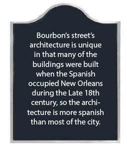
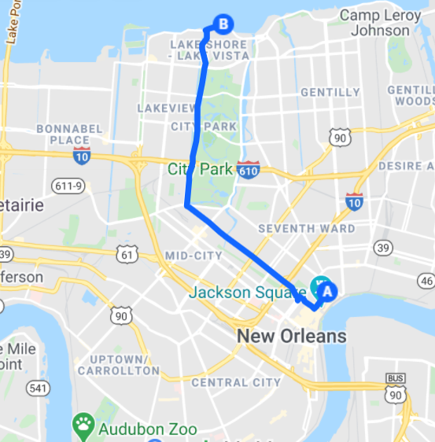
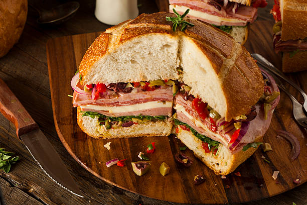
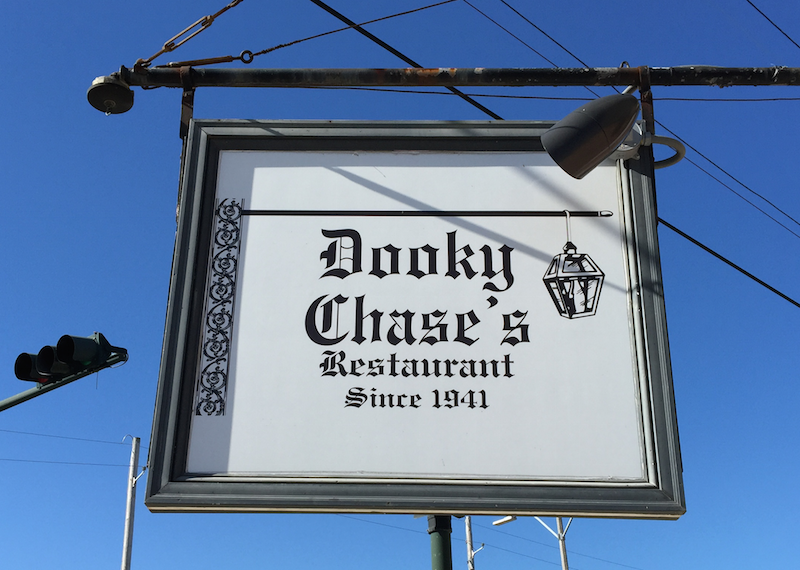
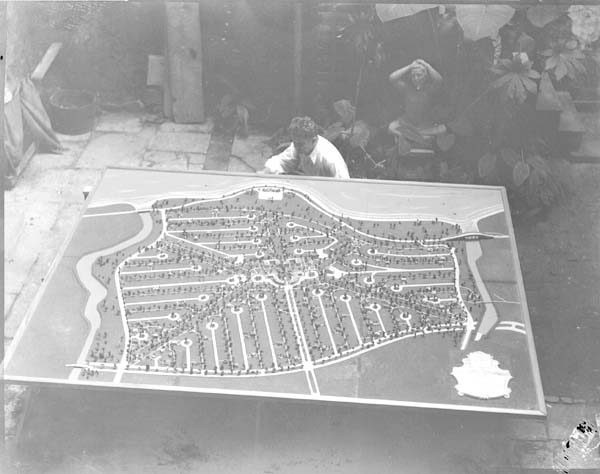

You turn north onto Canal Street. The din of tourists milling about invades your ears. You zig and zag through the afternoon traffic. You pass a massive building with a glowing sign
You slow down as you turn right onto Bourbon Street.

It's early in the night but revellers are already hanging out at the bars, some even drinking in the streets.
You've finally made it. The warm glow of the Verti Mart draws you in.

An ominous building stands across the street. Creepy!
As you walk into the store, you realize something is of. No one is inside the store, including Wayne. It seems a bit early for the market to close but you notice a single candlelit table with a paper bag on it. The bag has a note that says SORRY taped to it.
-DING-
You flip over the post it note.
As you walk out of the verti marte and bite into your muffuletta, a cool breeze passes through the street. A soft voice enters your ear.
“You’ll search for what you want to find, but it’s all a lie. Enjoy your travels, enjoy the sky”
You turn around, but no ones there.
You speed down Royal Street, past galleries and hotels.
You turn sharply onto Orleans Ave. Who was speaking back at the Verti Marte, you wonder, and why did Dwayne leave you for the lake? As you speed by a lot of stuff. But only a few things catch your eyes. One is a restaraunt with a...
weird name

You push over one of the city's many levees and arrive at City Park. This place is a huge rectangle, three miles tall by one mile wide, backed to the brim with museums, gardens, walking trails, a school, and a variety of sports fields including golf, minigolf, and disc golf courses. You drive by the Art Museum and the famous Cafe du Monde darting ever farther north. The farther up you go the more suburban the city gets, the more laid back as well.
You exit city park and are driving through the tall oak trees of Lake Vista, a prime example of the Garden City movement of the UK. The neighborhood is one giant circle with for quadrants all surrounded by long parks of greenery that form an x.
You drive up and reach the lake. As you approach the end of the directions once again you find no one there. DING! new message
It’s from who else but Dwayne
nonononononononono
DING! Another text
You turn around and there's Dwayne. Sometimes you really hate that guy